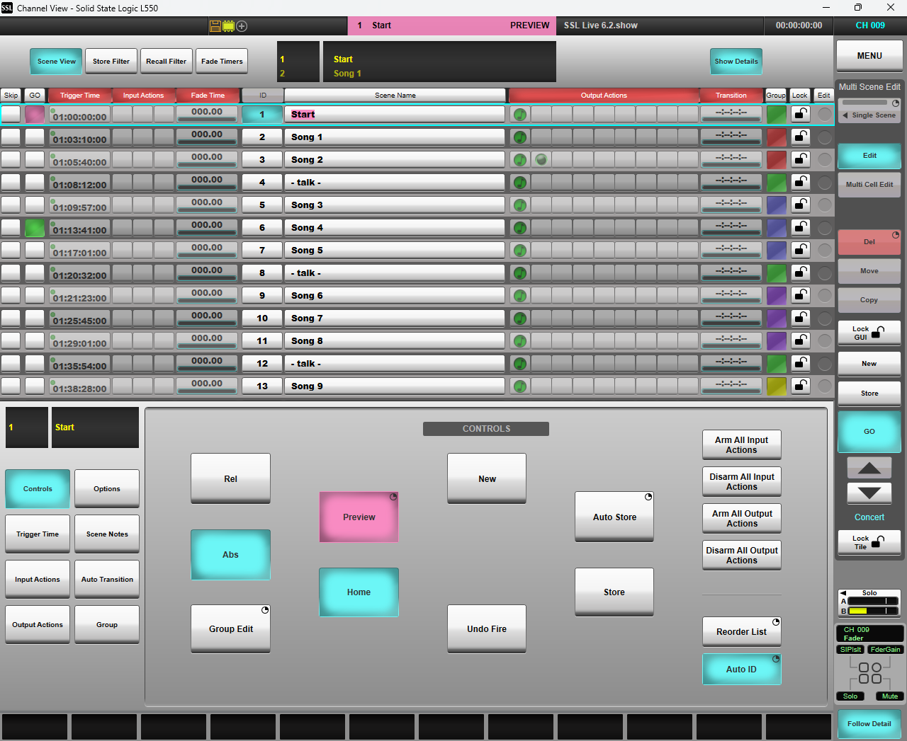

Automation Preview Mode
Preview mode can be used to check and change a scene's settings on the console surface without affecting the audio currently passing through the console. It is currently a licensed feature, please contact your SSL sales or support representative if you wish to use Scene Automation Preview mode.

Entering and exiting Preview mode
To enter Preview mode, select the desired scene in the list and press & hold the Preview button on the Master Tile or in the Controls section of the Automation page. The console's control surface will now change to display the settings of the selected scene, but the console will continue to process incoming audio based on the settings of the active scene prior to entering Preview, i.e. there will be no changes to the audio processing while in Preview.
Note: all control surfaces connected to the console will be switched into Preview mode. This includes any consoles and SOLSA instances in remote mode, Live Expander surfaces and TaCo instances connected to the console.The active scene (i.e. the last one that was fired before Preview mode was activated) is indicated by a green Go button in the automation scene list, as normal. The Previewed scene is indicated by a pink Go button, and the scene name is highlighted in pink. The automation section of the status bar will flash pink to indicate that Preview mode is enabled.
To exit Preview, either press Home to return to the active scene in the list or press Preview to remain on the last selected scene in Preview mode. Pressing Go at this point will then fire the selected scene (as normal).
Operating in Preview mode
While in Preview most of the automation controls also work as normal.- Other scenes can be selected by navigating to them in the list and pressing Go.
- Changes to scenes can be stored using the Store button (unsaved changes will be lost on exiting Preview).
- New scenes can be created using the New button.
- Group changes can be made using the Group controls.
All console functionality is available for adjustment while in Preview. However, certain functionality will be suspended when entering Preview mode. This includes:
- Scene changes triggered by Timecode, Input Actions or Transition Times
- Output Actions on scene recall
- Communications to I/O
- The ability to change settings on Network & Dante I/O devices.
A list of where each parameter is stored can be found here.
Important Preview Notes
- The operator should not save and load showfiles while Preview mode is active.
- Control of External Devices (OSC, L-ISA etc.) continues while in Preview mode - this may change in a future release.
- The console GUI still allows changes to Dante routing while in Preview mode. These changes do not apply, even after exiting preview mode. Do not use console managed Dante routing while in Preview mode.
- Events linked to path/console functions will still fire when in Preview mode, if those parameters are recalled by a scene. Be mindful of events with external destinations (like MIDI or GPIO outputs) when firing through a scene list.
The parameters of the active scene (the scene currently running on the DSP) can be edited while in Preview, either directly by making it the Previewed scene, or via Group mode. However, these changes will only be applied to the audio when the scene is next fired outside of Preview mode.
It is important to store any desired changes that are currently active before entering Preview, so that any changes stored whilst in Preview do not conflict with them. If changes are stored in Preview, the active scene will show as having pending changes on exiting Preview (Store button will light), because the stored parameter states will differ to the settings on the console surface. Pressing Store at this point will overwrite the changes made in Preview with those currently active on the surface. Care should therefore be taken to ensure the correct changes are retained and not accidentally overwritten.